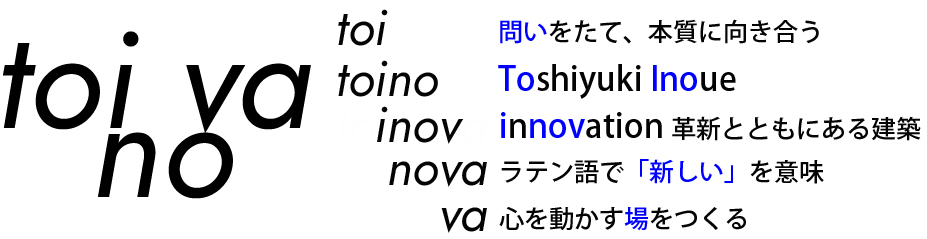
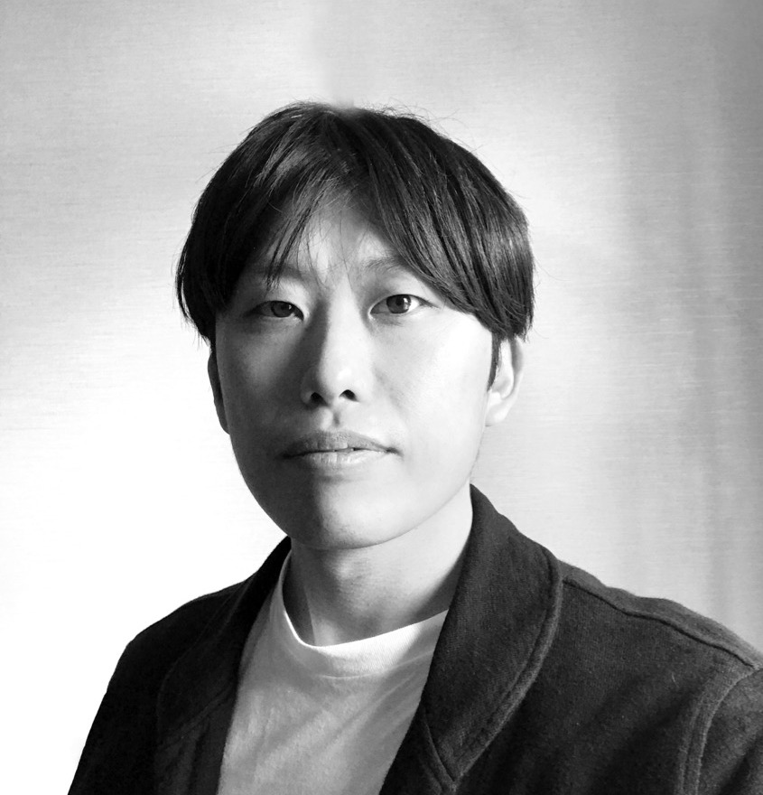

建築物（規模・用途・新築/改築を問わず）の設計および工事監理、家具・照明・プロダクトのデザイン、都市計画、ランドスケープデザインなど。
Architectural design and construction supervision regardless of scale or type, plus furniture, lighting and product design, urban planning, and landscape design.一級建築士事務所
トイノバについて
トイノバについて
About Toinova
Mission
トイノバは建築家 井上 寿行によって設立された建築設計事務所です。
私たちは、与えられた条件にただ応えるのではなく、あらゆる方面に「問い」を立てることから建築を構想します。
用途や敷地の特性、使い手の思い、社会の状況に向き合いながら、常に本質を見つめ直し、そこから生まれる新たな可能性をかたちにすることを目指しています。
建築を通じ、今ある風景にまだ見ぬ価値をひらく。それが私たち toinova のミッションです。
Toinova is an architectural design office established by Toshiyuki Inoue.
Rather than simply answering a brief, we begin architecture from a question—seeking the deeper meanings hidden within a site, a program, or a client’s vision.
Through thoughtful inquiry and design, we aim to reveal new possibilities and transform ordinary conditions into meaningful, inspiring environments.
Our mission is to unlock unseen value in the landscape through architecture.
Name Origin / 事務所名の由来

Services / 業務内容
Service Area / 業務エリア
日本国内・国外を問わず承ります。
Available for projects both in Japan and internationally.Company Info / 会社概要
- 資本金
- 100,000円
- 会社所在地
- 154-0016 東京都世田谷区弦巻4-12-2
- 技術者数
- 1名（プロジェクトの受注状況に応じて、信頼と実績のある協力事務所を参画させ、柔軟にチームを組閣する形態としております）
- ホームページ
- https://toinova.com/
- 連絡先
- (TEL)070-9163-2318 (MAIL)contact@toinova.com
Approach / 設計の姿勢
代表の井上はこれまでに住宅から、図書館や学校などの教育文化施設、オフィス・商業施設・ホテル等の複合用途で構成される再開発計画まで、幅広い建築の設計に携わってきました。建築はその規模や用途を問わず、場所のポテンシャルとクライアントにとっての価値を最大化する事が大切であると考え、活動しています。
Major Projects (Previous Position)
- リブリオ行橋 — 図書館・子育て支援・ホールの複合施設(約 5,000㎡)
- 下妻市立下妻中学校 — 校舎・部室棟・グラウンド整備(約 10,000㎡)
- 某企業の単身者寮 — 寄宿舎(約 1,400㎡)
- 某 再開発計画 — 商業・オフィス・ホール・ホテル複合(約 300,000㎡)
- 某 再開発計画 — 商業・オフィス・ホテル複合(約 100,000㎡)
- 某 店舗 — 商業施設(約 2,000㎡)
Principal

井上 寿行
Toshiyuki Inoue
一級建築士 / Licensed Architect of Japan
- 1986
- 秋田県出身born in Akita, Japan
- 2009
- 東洋大学 工学部 建築学科 卒業B.Arch, Toyo University
- 2011
- 東洋大学大学院 工学研究科 修了M.Arch, Toyo University
- 2011 – 2018
- 株式会社 三上建築事務所Mikami Architects
- 2018 – 2025
- 株式会社 日本設計Nihon Sekkei
- 2025
- 一級建築士事務所トイノバ 設立Established Toinova
- 2026.3
- 合同会社として法人化Incorporated as an LLC